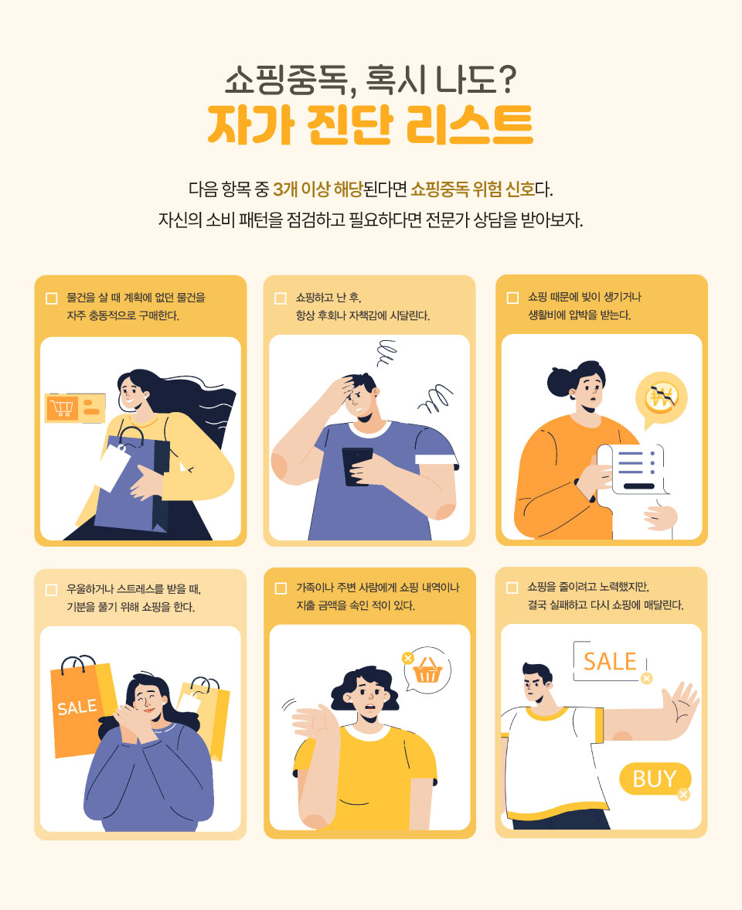

글. 편집실 참고. 서울대학교 병원 외 다수
돈으로 기분을 달래는 일이 잦아졌다면, 그 뒤에 숨은 마음의 문제를 한 번쯤 돌아봐야 한다. ‘사는 즐거움’이 어느새 ‘사야만 버틸 수 있는 일상’으로 바뀌었는가? 그렇다면 이것은 단순한 소비를 넘어 쇼핑중독의 신호일 수 있다.
쇼핑은 더 이상 단순한 소비 행위가 아니다. 힘든 하루를 보냈을 때,
불안하고 외로울 때, 가장 빠르고 쉽게 기분을 좋게 만드는 ‘감정 해소
수단’이 된다. 휴대폰 화면만 몇 번 누르면 잠시나마 현실의 스트레스를
잊고 짜릿한 쾌감을 맛본다. 택배 상자를 뜯는 순간의 설렘이 우울함을
날려주는 듯하다.
하지만 이러한 경향이 지나치면 통제 불가능한 상태에 이른다. 물건이
필요해서가 아니라, 사는 행위 자체에서 오는 짧은 쾌감 때문에 스스로
멈추지 못하고 빚을 지거나 가정불화를 겪는 상황에 처한다. 전문가들은
이것을 ‘강박적 구매 장애’, 즉 ‘쇼핑중독’이라 부른다. 쇼핑중독은 개인의
삶을 무너뜨리는 심각한 결과를 낳는다.
쇼핑중독은 의학적으로 충동 조절 장애의 일종이다. 물건을 사지 않으면
불안하고 초조하며, 구매를 해야만 일시적으로 긴장이 풀리는 특징을
보인다. 특히 쇼핑중독은 우울증, 불안 장애, 알코올이나 도박중독 같은
다른 정신 건강 문제와 함께 오는 경우가 많다고 전문가들은 지적한다.
이 중독의 근본 원인은 마음속의 ‘빈 공간’이다. 낮은 자존감이나 외로움
같은 부정적인 감정이 밀려올 때, 사람들은 이를 메우기 위해 돈을 쓴다.
쇼핑을 통해 얻는 고가 물건이나 화려함이 잠시나마 자존감을 높여주는
듯한 착각을 준다. 그러나 이러한 쾌감은 오래가지 못한다. 물건을 사고
나면 곧바로 후회와 자책감이 밀려온다. 이 부정적인 감정은 우울함을
심화시키고, 결국 그 우울함을 풀기 위해 또다시 쇼핑에 의존하는 악순환을
만든다.
쇼핑중독은 스트레스와 우울함이 맞물려 돌아가는 악순환 구조를 가지고
있다. 국내 연구 결과에 따르면, 스트레스가 우울감을 증가시키고, 이
우울감이 다시 온라인 쇼핑중독의 위험성을 크게 높이는 것으로 나타났다.
특히 스트레스를 받은 사람들이 충동적인 온라인 쇼핑을 통해 일시적인
위안을 얻으려 하기 때문이다.
한국소비자원의 ‘온라인 쇼핑몰 소비자 문제 실태’ 연구에 따르면 이들은
자신의 외로움, 우울, 낮은 자존감 같은 심리적 공허함을 메우기 위해
쇼핑을 가장 쉬운 탈출구로 삼는다. 즉, 돈으로 감정을 해결하려는 것이다.
쇼핑은 잠시 긴장을 해소해 주지만, 구매 후 찾아오는 죄책감과 늘어난
카드 대금은 우울감을 더욱 깊게 만든다. 빚을 지면서도 쇼핑을 멈추지
못하는 것은 이미 충동 조절 능력을 상실했다는 신호다.
쇼핑중독은 개인의 삶을 무너뜨릴 정도로 심각한 결과를 가져온다.
쇼핑중독의 심각성을 보여주는 사례는 적지 않다.
해외에서는 이 충동적 구매 습관이 극단적인 형태로 나타난다. 중국
상하이에 사는 60대 여성의 사례가 대표적이다. 그녀는 온라인 쇼핑에 무려
4억 원을 썼고, 물건을 쌓아둘 곳이 없어 아파트를 추가로 임대하기까지
했다. 그녀가 산 대부분의 물건은 포장도 뜯지 않은 채 방치되었다. 이는
물건을 사용하려는 목적이 아니라, 오직 구매 버튼을 누르는 순간의
쾌감만을 좇았기 때문이다. 이처럼 쇼핑중독은 개인의 재산을 탕진하고,
사재기 장애 같은 다른 문제까지 동반하며 삶을 통제 불가능 상태로
만든다. ‘*텅장’을 막기 위해서는 충동구매를 유발하는 근본
원인인 스트레스를 관리하는 것이 중요하다는 사실을 여실히 보여준다.
텅장 : 통장이 텅 빈 상태를 뜻하는
표현
쇼핑중독은 단순한 습관이 아니라 개인의 정신건강과 경제 상황을 모두
위협하는 현대인의 질병이다. 서울대학교병원에 따르면, 미국에서는 전체
인구의 2%에서 8% 사이가 쇼핑중독을 겪고 있으며, 그중 80%에서 95%
사이가 여성인 것으로 나타났다. 특히 쇼핑중독 환자 중 12.5%에서 30%
사이는 강박장애를 동반하고 있으며, 우울증, 불안장애, 알코올 및 약물
남용이 함께 나타나는 경우가 많다.
노르웨이 베르겐 대학의 세실 슈 안드레센 박사팀이 개발한 ‘베르겐
쇼핑중독 척도(BSAS)’ 연구에서는 쇼핑중독자들이 약물중독이나
알코올중독과 유사한 증상을 보인다는 사실이 확인되었다. 통제력 상실,
갈망 현상, 금단 증상 등이 나타나며, 특히 낮은 자존감을 가진 사람들이
쇼핑을 통해 자신의 이미지를 높이려 한다는 비합리적인 믿음을 갖고 있는
것으로 드러났다.
전문가들은 쇼핑중독을 다른 행동중독처럼 약물치료와 인지행동치료를
병행하면 충분히 극복할 수 있다고 강조한다. 자신의 구매 행위에 문제가
있다고 판단되면 정신건강 전문의와 상담하고 적절한 치료를 받는 것이
중요하다. 스스로 소비를 통제하고 관리할 때, 소비의 노예가 아닌 자기
삶의 주인이 될 수 있다. 쇼핑을 통해 일시적인 쾌감을 얻으려는 심리가
결국 경제적 어려움으로 이어지는 악순환을 낳는다는 것을 명심해야 한다.
정신건강 전문가들은 더 건강한 감정적 규범을 발전시키기 위한 몇 가지
전략을 제시한다. 특히 기업을 대상으로 진정한 감정과 우려 표현을
정당화하는 정책 구현, 감정노동 요구에 대처하는 데 도움이 되는 자원
제공, 괴롭힘 법 집행 강화에 초점을 맞춘 권고사항을 주문하고 있다. 기업
웰니스 프로그램도 꾸준히 증가하고 있으며, 정신건강 지원을 통해 감정적
웰빙에 초점을 맞추는 추세다.
‘괜찮아’라는 말이 때로는 가장 괜찮지 않은 대답일 수 있다는 사실 을
이제는 인정할 때다. 독성 긍정성에 빠지지 않기 위해서는 모든 감정, 즉
기쁨·슬픔·분노·두려움이 인간 경험의 자연스러운 일부임을 받아들이는
것이 중요하다. 혹시 독성 긍정성의 덫에 빠진 것 같다면, 물 한 모금
마시듯 잠시 멈추고 자신에게 물어보자. “지금 나의 진짜 감정은
무엇일까?”
